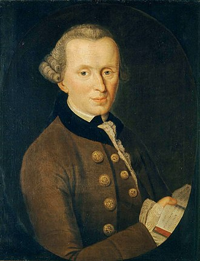

kant is geboren op 22 April 1724 in Königsberg, East Prussia, Kingdom of Prussia en is overleden op 12 february 1804 hij is 79 geworden was a German philosopher and one of the central Enlightenment thinkers. Kant's comprehensive and systematic works in epistemology, metaphysics, ethics, and aesthetics have made him one of the most influential figures in modern Western philosophy.
